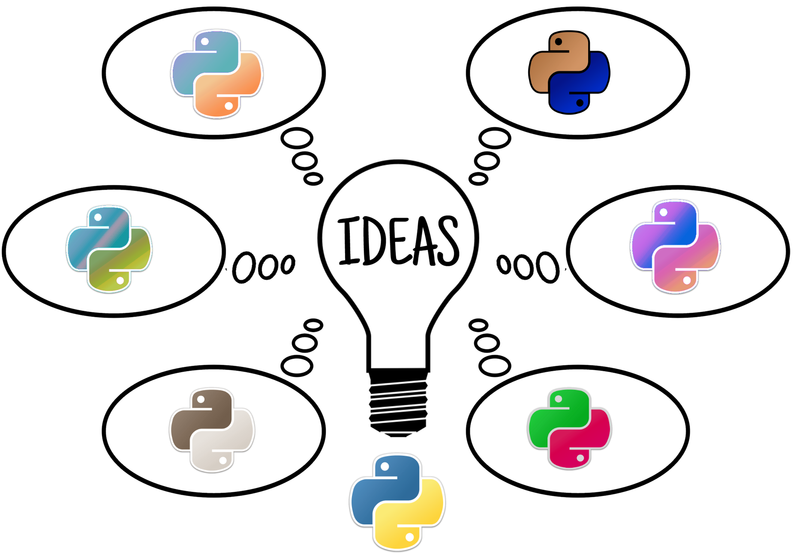

Ideas: making it easier to extend Python’s syntax¶
ideas current working version: 0.3.14; Code on Github


You have an Excellent Idea ® to change the Python syntax and want to find a way to include your Excellent Idea ® in your Python programs. According to Python Developers Guide, this might be doable if you are willing to follow “a few steps” including:
Get a copy of the CPython’s code repository and all the required compilers for your platform.
Modify the grammar file to add rules for the new syntax.
Modify the AST generation code; this requires a knowledge of C
Compile the AST into bytecode
Recompile the modified Python interpreter
This … can be a rather daunting task. It might get a bit easier if you grab a copy of the currently unpublished book by Anthony Shaw, CPython Internals and read it from cover to cover, but it will still remain a major task. Furthermore, it would not be easy to share your work with others so that they can try it out.
However, there is a simpler way: it is possible to run code with a modified syntax using import hooks. [1]
Important
This entire project is meant as enabling easy experiments with changes to Python’s normal syntax. Some (most?) of the examples are definitely not reliable enough to be included in code used by anyone other than yourself.
Quick links to topics¶
Many examples
- Guide to the many examples included
- Source transformations
- nobreak as a keyword
- repeat as a keyword
- French Python
- French repeat
- Auto-self
- Decimal math
- Fractional math (token)
- Unitary increment and decrement operators
- Switch statement
- Implicit multiplication
- Unnormalized unicode
- from-export: PEP 843
- export-name: PEP 842
- export as a (soft) keyword (PEPs 842 + 843)
- AST transformations
- AST creation
- Bytecode transformations
- More complex examples
- Tranforming a module after creation
- Custom encoding
- Source transformations
Appendix